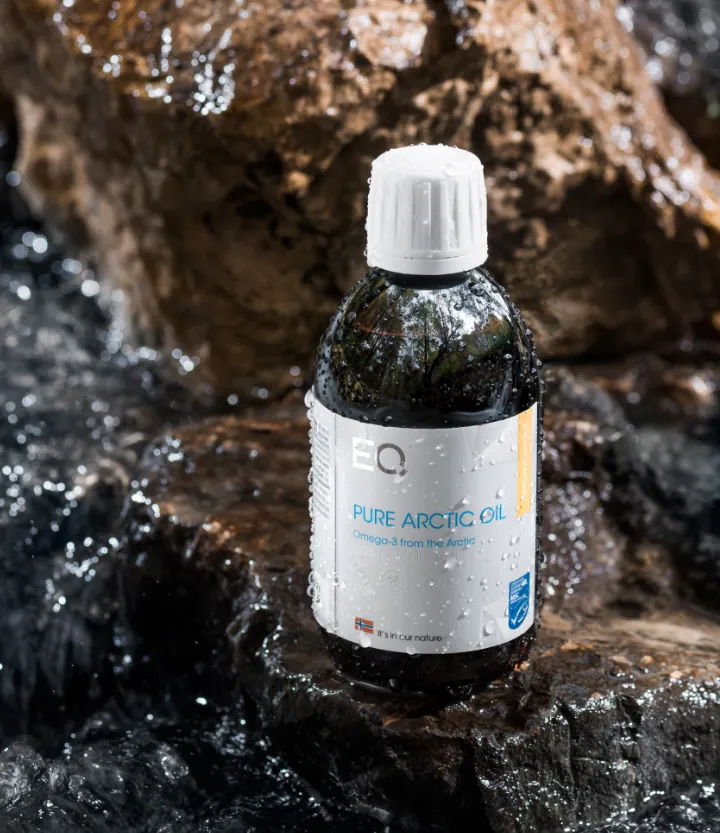

Nouveau • NoëlLes coffrets cadeaux
Nouveau • NoëlLes coffrets cadeaux
Ne devinez pas vos oméga‑3. Mesurez‑les.
Eqology est une marque norvégienne d'oméga-3. Le principe : un test sanguin fait chez vous, l'huile qui vous convient, puis un second test pour mesurer la différence.
Vous êtes au bon endroit si vous voulez…
Chaque page explique tout, simplement, et Yves répond à vos questions.

Connaître votre taux d'oméga‑3
Une goutte de sang prélevée chez vous, analysée par un laboratoire indépendant. Résultat en ligne.
Découvrir le test
Commander vos produits
Huiles de Norvège, version végane, vitamines et coffrets. Payés et livrés chez vous par Eqology.
Voir la boutiqueUn complément de revenu
Recommandez les produits, sans stock et à votre rythme, avec l'équipe d'Yves pour vous former.
Comprendre le partenariatUne marque norvégienne qui montre ce qu'elle met dans ses flacons.
Depuis plus de 20 ans, Eqology fabrique des compléments alimentaires basés sur des tests, à partir d'ingrédients naturels de Norvège. Son siège est à Oslo.

- d'expérience dans les oméga-3
- 20 ans
- siège à Oslo, pêche en mer Arctique
- Norvège
- pêche durable certifiée, traçable jusqu'au bateau
- MSC
Ce que fait Eqology
La marque
- ✓ Fabrique et contrôle les produits
- ✓ Encaisse le paiement, en toute sécurité
- ✓ Livre chez vous et gère le service client
Ce que fait Yves
Le conseil
- → Vous aide à choisir le bon produit
- → Répond à vos questions sur le test
- → Vous rappelle si vous le souhaitez

Tout pour vos oméga‑3. Une seule marque, testée.
Huiles de Norvège, version végane, tests à domicile, vitamines et coffrets. Vous commandez chez Eqology, livraison à domicile.
Une qualité bâtie sur des bases solides.
 Traçabilité
Traçabilité
Les produits par lesquels on commence.
Le bouton « Commander » de chaque fiche vous mène à la boutique officielle Eqology : paiement et livraison par la marque.
Recommandez Eqology, avec une équipe à vos côtés.
Praticiens de santé ou particuliers : un complément de revenu, sans stock, à votre rythme. La page partenaire explique tout le système.
Comprendre le partenariat
Est-ce le site officiel d'Eqology ?
Non. C'est le site d'Yves Coignard, distributeur indépendant Eqology en France. Quand vous commandez, vous passez sur la boutique officielle Eqology : c'est elle qui encaisse et qui livre.
Comment se passe une commande ?
Vous choisissez un produit ici, puis le bouton « Commander chez Eqology » vous mène à la boutique officielle. Paiement sécurisé, livraison à domicile. Le prix affiché par Eqology au moment de la commande fait foi.
Pourquoi commencer par le test ?
Pour savoir d'où vous partez. Le test indique votre rapport oméga-6 / oméga-3 ; un second test, quelques mois plus tard, montre ce qui a changé. Ce n'est pas un diagnostic médical, c'est un repère.
Qui est Yves Coignard ?
Un distributeur indépendant Eqology. Il conseille ses clients, répond aux questions sur le test et accompagne les personnes qui veulent devenir partenaires.
Puis-je être conseillé avant d'acheter ?
Oui. Écrivez à Yves depuis la page contact : il vous répond, ou vous rappelle si vous laissez votre numéro.